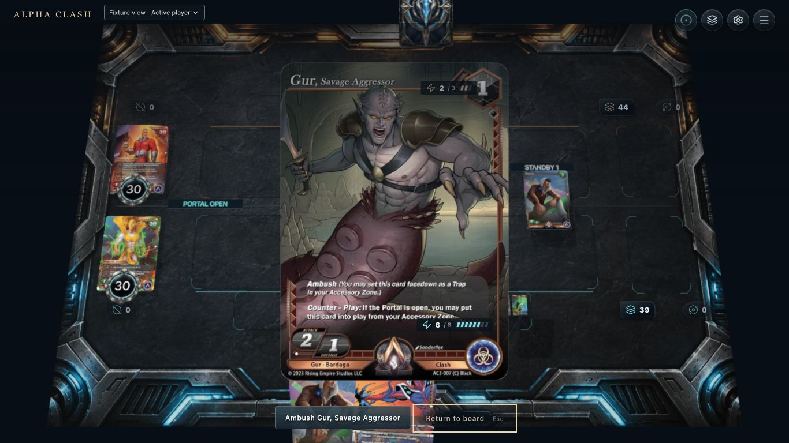
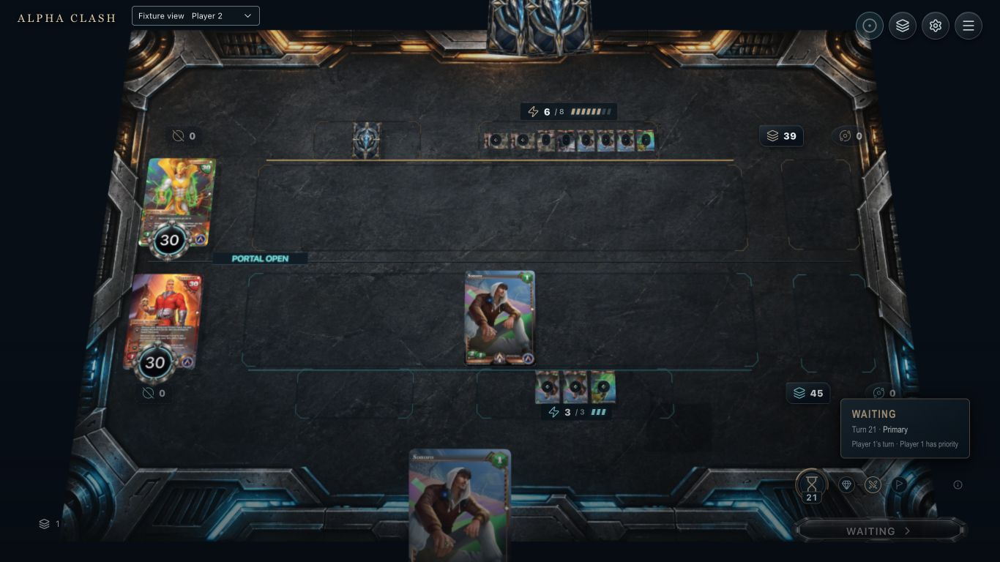
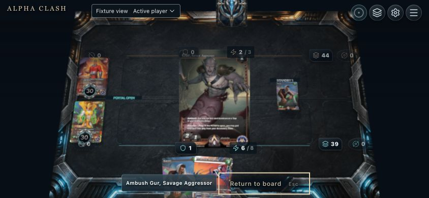
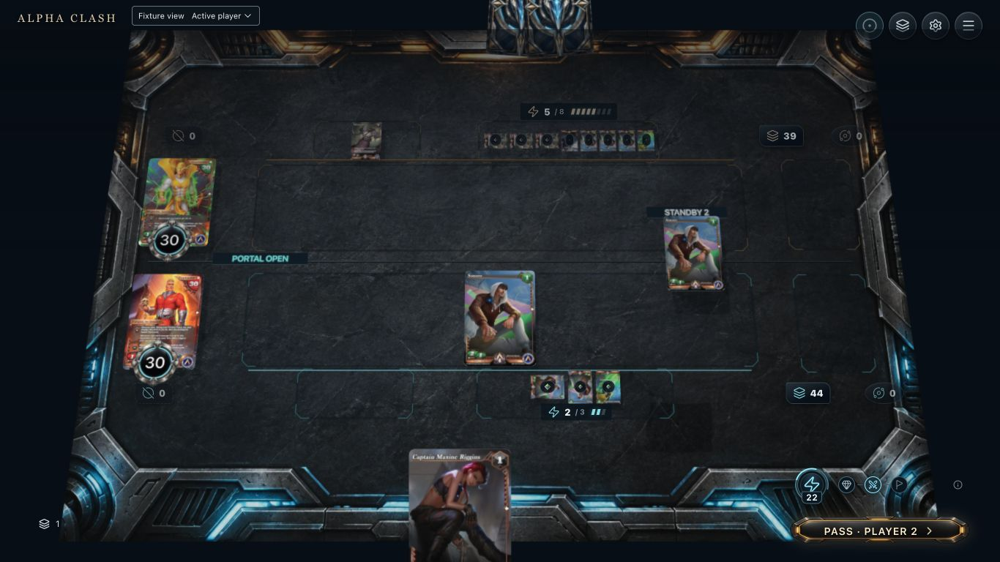
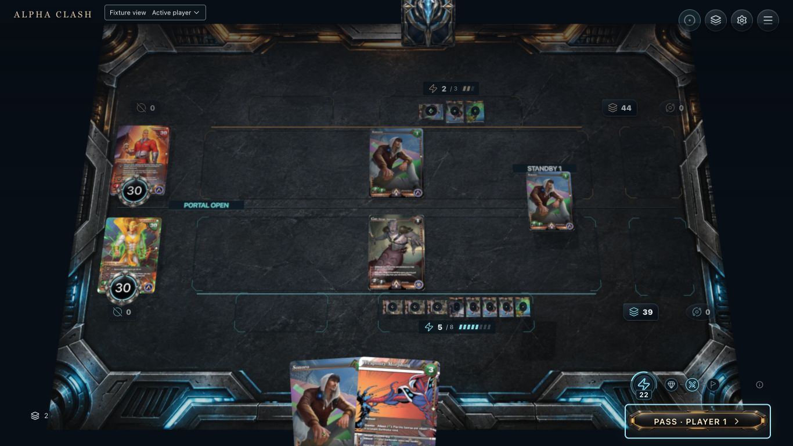
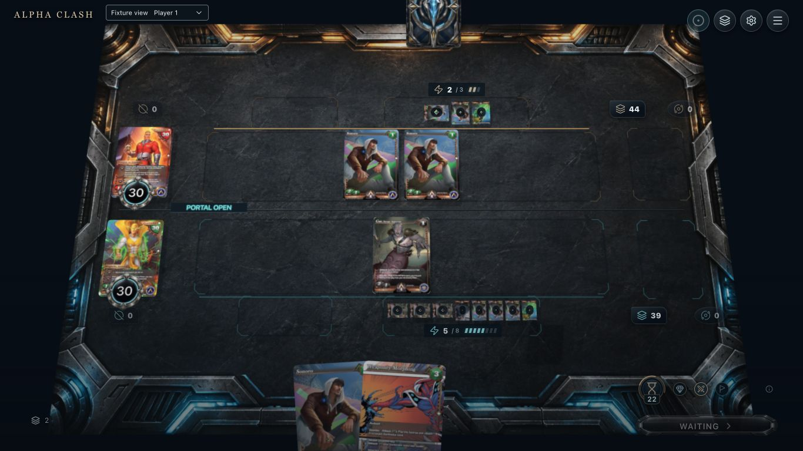

11. Available
Captured: eligible native response in owner inspection. Proposed: persistent source outline before inspection.

22. Hover / focus
Proposed over captured hidden board: outline the set-card slot without revealing its artwork to the opponent.

33. Selected
Proposed over captured inspection: stage one black resource and Accessory→Clash preview; this baseline auto-pays on action.

44. Pending
Captured: paid response has a public face in Accessory. Proposed: persistent link to the original pending Sonoro.

55. Resolving
Captured after Gur entry; use entry recording to inspect travel. Original Sonoro remains pending separately.

66. Completed
Captured: Gur in Clash and both Sonoro cards resolved. Pending marks clear; owner hand and resource counts remain native.